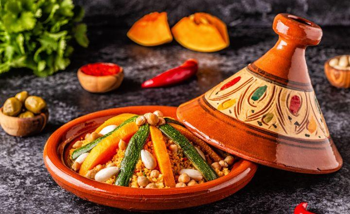

ressta de mi mejor comida
tajín es un platillo, pero puede que sea una confusión con el nombre!
Es probable que estés buscando el plato tradicional conocido como "tajín" o "tahín" que es típico de la cocina marroquí.
En este caso, el tajín (o tahín) es un estofado sabroso,
que se cocina lentamente en un recipiente de barro llamado tajín,
con carne (pollo, cordero o ternera) y una variedad de ingredientes como verduras, frutos secos, especias,
y a menudo una mezcla de dulzura y sabor salado.
¿Cómo se prepara el tajín marroquí?
Ingredientes básicos:
- Carne (pollo, cordero, ternera)
- Cebolla, ajo, tomate
- Especias: cúrcuma, comino, jengibre, canela, pimentón, azafrán
- Frutos secos: almendras, pasas o ciruelas secas
- Aceitunas (opcional)
- Caldo de pollo o agua
- Aceite de oliva
Preparación:
- Sofrito: En un tajín (o una cazuela de barro grande), calienta aceite de oliva y sofríe la cebolla y el ajo hasta que estén dorados.
- Especias: Agrega las especias (comino, cúrcuma, jengibre, etc.) y cocina por un par de minutos para liberar los aromas.
- Carne: Incorpora la carne (puede ser pollo, cordero o ternera) y dóralo por todos los lados.
- Verduras: Añade tomates picados y, si quieres, zanahorias o papas.
- Cocción lenta: Vierte caldo o agua hasta cubrir los ingredientes y deja cocer a fuego lento.
Lo ideal es que se cocine a fuego bajo por un largo período (al menos 1-2 horas) para que los sabores se mezclen bien.
- Frutos secos y dulce: Al final de la cocción, puedes añadir pasas, almendras o ciruelas secas para un toque dulce.
Algunas recetas también incluyen un toque de miel o azúcar.
- Servir: Sirve caliente con couscous o pan marroquí.

Este platillo tiene una combinación única de sabores, con lo dulce de las frutas secas y lo salado de la carne y las especias.
Además, el tajín cocido lentamente en su propio jugo conserva una textura tierna y llena de sabor.